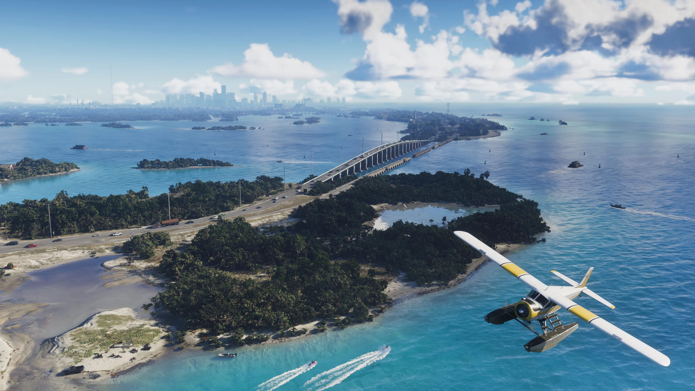
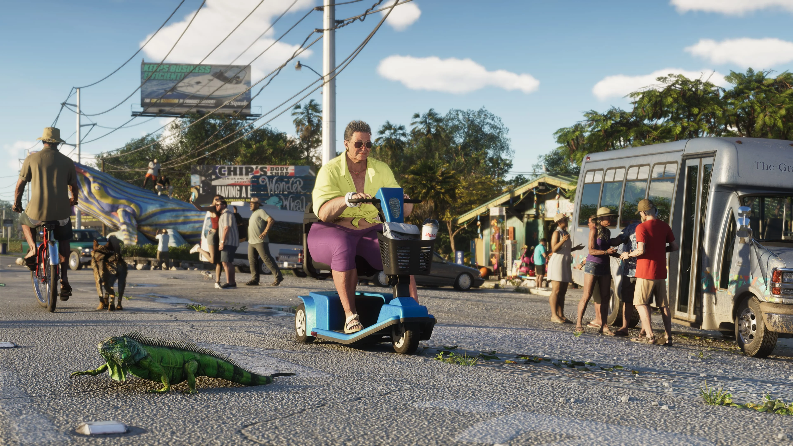
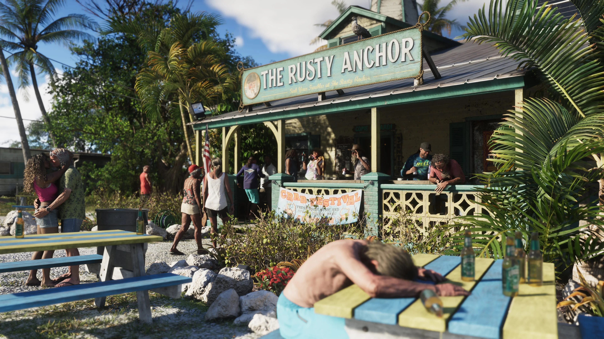
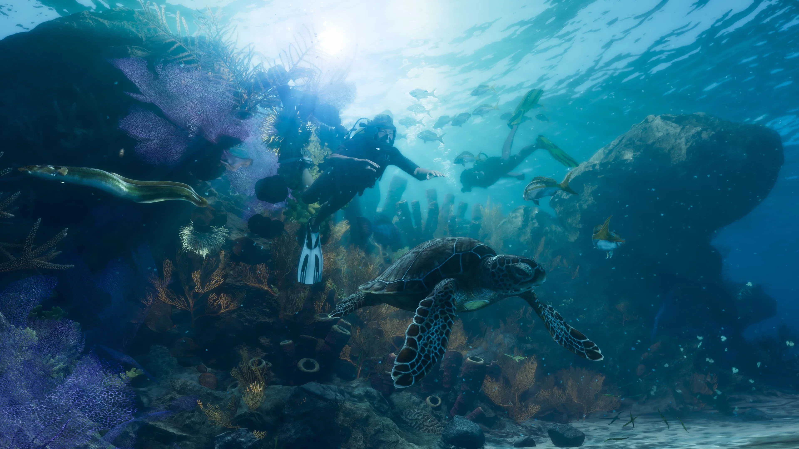
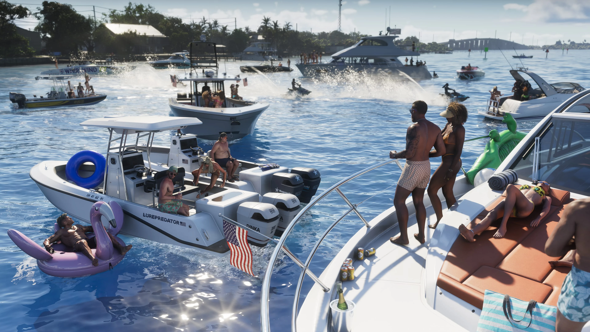

Leonida Keys
Leonida Keys é um dos destinos oficialmente apresentados de Grand Theft Auto VI. A região está diretamente ligada à história recente de Jason Duval e ao veterano traficante Brian Heder, além de aparecer em uma coleção própria de imagens oficiais da Rockstar Games.

O lado tropical de Leonida
Leonida Keys aparece entre os destinos destacados oficialmente pela Rockstar Games para GTA VI. Os materiais divulgados mostram uma região cercada por água, com ilhas, estradas, embarcações e construções costeiras que contrastam com o ambiente urbano de Vice City.
A área também tem conexão direta com personagens já apresentados oficialmente. Depois de uma passagem pelo Exército, Jason Duval acabou nos Keys trabalhando para traficantes locais.

CONFIRMADO: Leonida Keys é um dos destinos apresentados oficialmente pela Rockstar Games no estado de Leonida.

Uma paisagem longe dos arranha-céus
Os materiais oficiais apresentam Leonida Keys com uma identidade visual diferente do ritmo urbano de Vice City.
Água, estradas costeiras, pequenas construções e espaços abertos aparecem com frequência nas imagens atribuídas à região.
Nomes de ilhas, estabelecimentos e pontos internos só serão catalogados quando houver confirmação oficial ou quando puderem ser verificados no jogo.
Estradas, construções e pontos de parada
As imagens oficiais também mostram construções e estabelecimentos distribuídos pelos Keys, indicando uma região que vai além das paisagens naturais e das águas tropicais.
O GTA6Zoone poderá catalogar esses locais depois do lançamento, desde que seus nomes e funções possam ser confirmados diretamente no jogo.


Um mundo também abaixo da superfície
Uma das imagens oficiais de Leonida Keys mostra o ambiente subaquático da região, reforçando a presença constante da água na identidade visual dos Keys.
A imagem, por si só, não confirma atividades, animais, colecionáveis ou segredos específicos. Esses detalhes só serão adicionados quando puderem ser verificados.
Exploração pelos Keys
Embarcações e cenas junto à água aparecem entre os materiais oficiais de Leonida Keys.
A página poderá reunir futuramente informações verificadas sobre barcos, rotas, atividades e outros elementos relacionados à exploração da região, sem antecipar mecânicas ainda não confirmadas pela Rockstar.

Pessoas ligadas a Leonida Keys
A região possui conexões diretas com personagens já apresentados oficialmente pela Rockstar Games.
Jason Duval
Depois de uma passagem pelo Exército, Jason acabou nos Keys trabalhando para traficantes locais antes dos acontecimentos centrais de GTA VI.
Conhecer Jason Duval → CONFIRMADOBrian Heder
Brian é um traficante veterano da época de ouro do contrabando nos Keys e ainda movimenta produto por seu estaleiro.
Conhecer Brian Heder →Tudo sobre a região
Esta página poderá crescer conforme surgirem novas informações oficiais e, depois do lançamento, dados que possam ser verificados diretamente no jogo.
Ilhas e locais
Áreas, construções e pontos de interesse confirmados.
Missões
Missões ligadas aos Keys, caso possam ser verificadas.
Atividades
Atividades da região que forem confirmadas.
Veículos e barcos
Veículos e embarcações associados à região.
Propriedades
Casas, negócios e propriedades identificadas.
Colecionáveis
Itens que possam ser encontrados e verificados nos Keys.
Segredos
Locais escondidos e descobertas verificadas.
Vida selvagem
Animais e encontros que puderem ser confirmados na região.
Imagens de Leonida Keys
Seleção de screenshots oficiais divulgados pela Rockstar Games para a região.
Leonida Keys no mapa de GTA VI
O mapa do GTA6Zoone foi preparado para futuramente reunir ilhas, propriedades, atividades e outros pontos de interesse encontrados nos Keys.
Posições e limites não serão tratados como oficiais enquanto não houver informação suficiente para confirmá-los.
Explorar o mapa →O que está confirmado
A região foi apresentada oficialmente pela Rockstar Games.
Depois de uma passagem pelo Exército, Jason acabou na região trabalhando para traficantes locais.
Brian é um traficante veterano da época de ouro do contrabando na região.
A Rockstar afirma que Brian continua movimentando produto por seu estaleiro.
A biblioteca oficial lista Leonida Keys 01 até 06.
Leonida Keys também possui postcard na área oficial de artwork e wallpapers.
Rockstar Games
As informações desta página utilizam materiais publicados oficialmente pela Rockstar Games.
Site oficial de Grand Theft Auto VI


TRANSPARÊNCIA EDITORIAL: detalhes ainda não confirmados sobre ilhas, missões, atividades, pontos de interesse, colecionáveis, fauna ou limites da região não são apresentados como fatos.